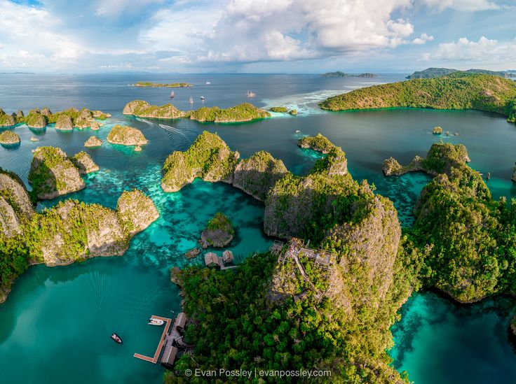
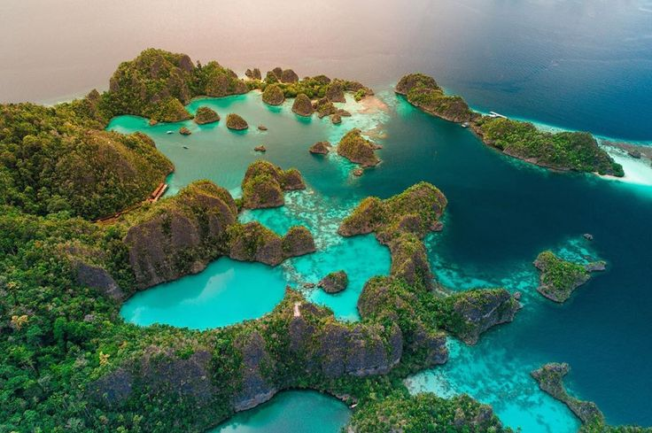
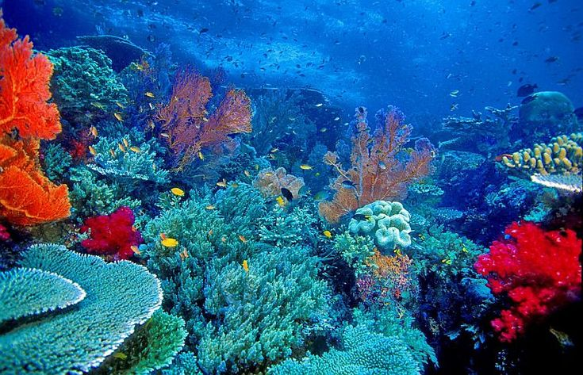

Pesona Kepulauan Raja Ampat, Papua Barat Daya

Raja Ampat merupakan salah satu destinasi wisata bahari yang terkenal di Indonesia. Raja Ampat berada di wilayah Papua Barat Daya dan dikenal dengan keindahan laut serta pulau-pulaunya.
Kawasan Raja Ampat memiliki pemandangan alam yang menarik, mulai dari pulau-pulau kecil, laut yang jernih, hingga kehidupan bawah laut yang beragam.
Raja Ampat merupakan kepulauan yang terdiri dari banyak pulau. Beberapa pulau yang terkenal antara lain Waigeo, Misool, Salawati, dan Batanta.
Raja Ampat menjadi salah satu tujuan wisata bagi wisatawan yang ingin menikmati keindahan alam, terutama wisata bahari.
Berikut beberapa gambar keindahan Raja Ampat.


Nama Destinasi: Raja Ampat
Provinsi: Papua Barat Daya
Negara: Indonesia
Kawasan: Kepulauan Raja Ampat
Salah satu akses menuju Raja Ampat adalah melalui Kota Sorong, kemudian dilanjutkan menuju wilayah Raja Ampat menggunakan transportasi laut.
| Informasi | Keterangan |
|---|---|
| Nama Destinasi | Raja Ampat |
| Provinsi | Papua Barat Daya |
| Jenis Wisata | Wisata Bahari |
| Aktivitas | Snorkeling, Diving, Island Hopping |
| Transportasi | Pesawat dan Kapal |